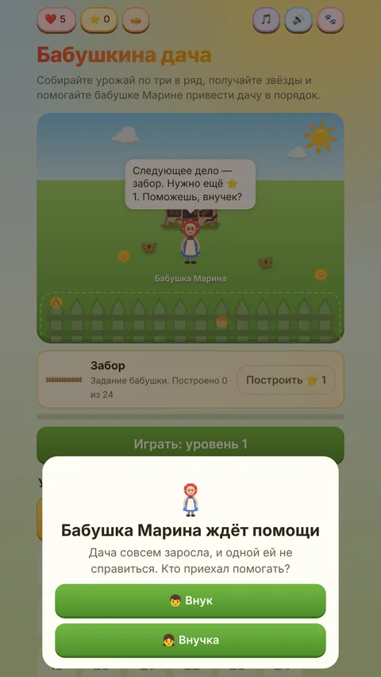
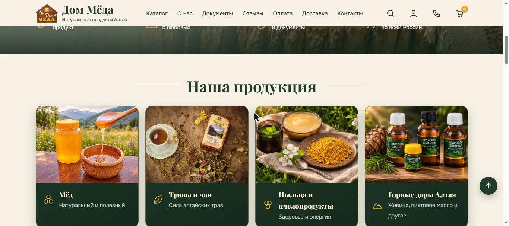

Здесь собраны подробности проектов и настоящие скриншоты.
GUSEVMADE / ПРОЕКТ
Бабушкина дача
Игра «три в ряд» с уровнями и обустройством дачи.




- Что сделано
- Игровые механики, интерфейс и подготовка к публикации.
- Результат
- Игра создана. Android-версия: RuStore.
GUSEVMADE / ПРОЕКТ
Алтай-рыбалка
Магазин снастей ручной работы.

- Что сделано
- Каталог товаров, корзина и передача заказа продавцу через Telegram.
- Результат
- Покупатель выбирает товары и готовит заказ. Сайт: алтай-рыбалка.рф.
GUSEVMADE / ПРОЕКТ
Дом мёда
Интернет-магазин алтайского мёда и продуктов пчеловодства.




- Что сделано
- Макет-концепция для заказчика, затем рабочий сайт: каталог, разделы о компании, документы, оплата и доставка.
- Результат
- Сайт запущен: dom-meda.com.
GUSEVMADE / ПРОЕКТ
Чат-визитка врача-косметолога
Одностраничный сайт-визитка для врача: знакомство, спецпредложения, связь через Telegram.

- Что сделано
- Дизайн и сборка на Тильде: блоки «Давайте знакомиться» и «Почему выбирают меня?», спецпредложения, ссылка на Instagram.
- Результат
- Сайт опубликован: открыть.